Света - Дорога в аэропорт (feat. KRP)
(Sveta - Doroga v aeroport, ‘Approaching the airport’)
I hate Russian stacking dolls. They’re so full of themselves.
Person and number labels
Slavic Languages
Russian
Grammatical Relations
The Beauty of Case
Why translating Dostoevsky is really, really tough
WTF Linguists!!
Linguistic shorthand to refer to participants in conversation
People are usually talking to somebody, about themselves and others.
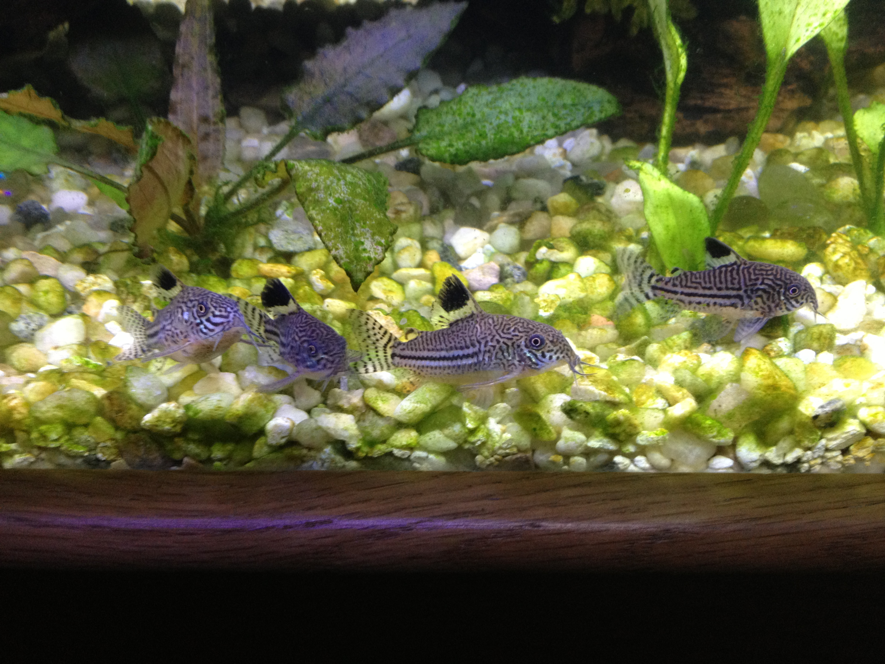
Refers to the speaker (and his/her group)
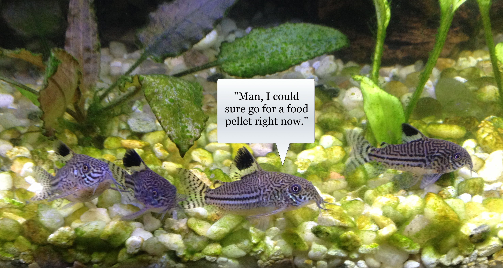
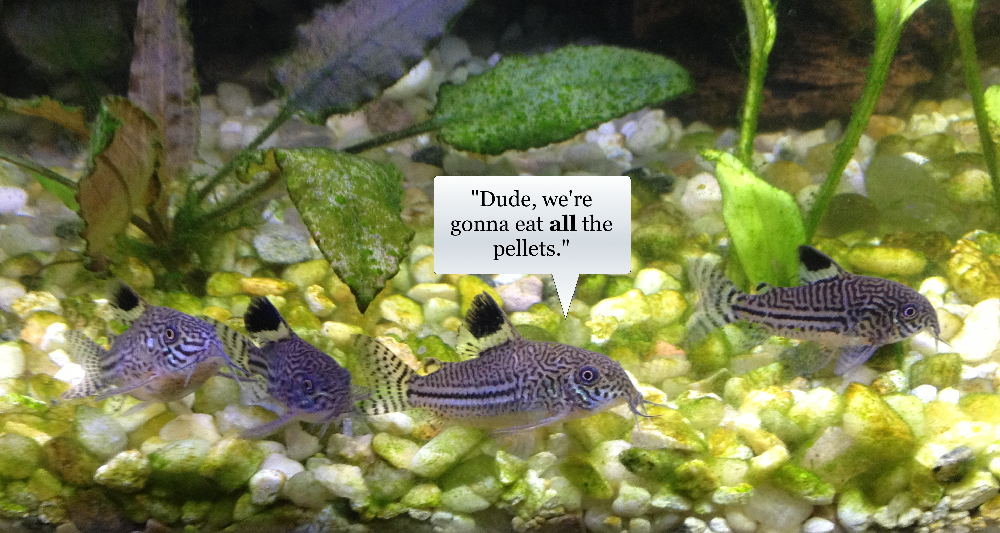
Referring to the listener(s)
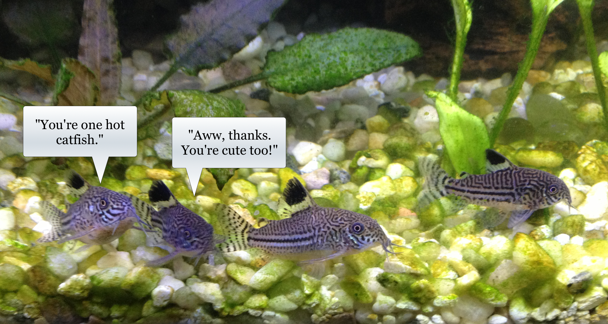
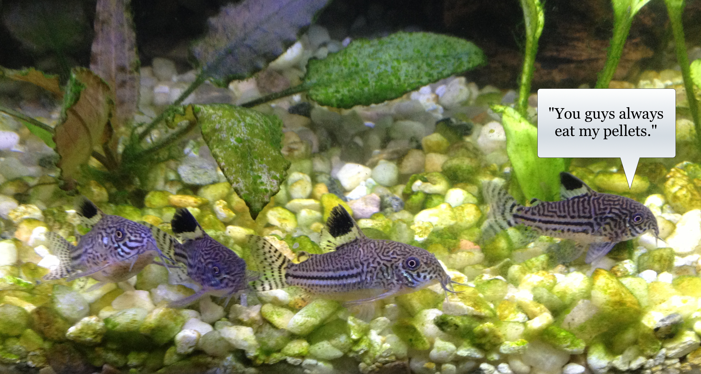
Referring to somebody outside the conversation
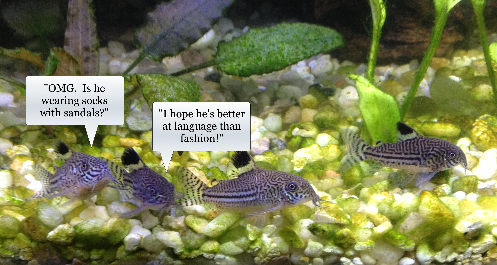
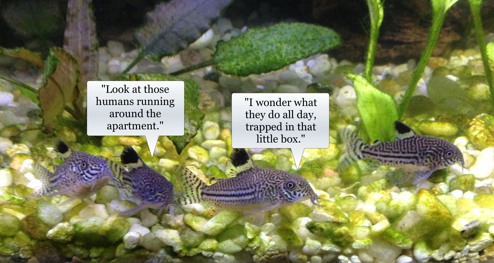
Pronouns
Verb conjugations
Case markers
Adjectives (sometimes)
| Singular | Plural | |
|---|---|---|
| 1st | I | we |
| 2nd | you | y’all |
| 3rd | he/she | they |
| Singular | Plural | |
|---|---|---|
| 1st | Yo | Nosotros |
| 2nd | Tu/Usted | Vosotros/Ustedes |
| 3rd | El/Ella | Ellos |
| Singular | Plural | |
|---|---|---|
| 1st | I judge. | We judge. |
| 2nd | You judge. | Y’all judge. |
| 3rd | He judges. | They judge. |
| Singular | Plural | |
|---|---|---|
| 1st | Juzgo. | Juzgamos. |
| 2nd | Juzgas. | Juzgáis. |
| 3rd | Juzga. | Juzgan. |
So, when it’s marked, we linguists write it down.
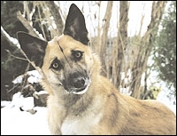
(OK, OK, let’s talk Slavic!)

(in green)
Rich Case Systems
Cyrillic Writing System
Complex Consonant Clusters
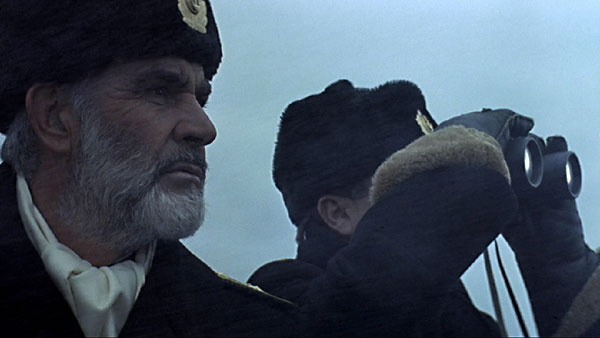
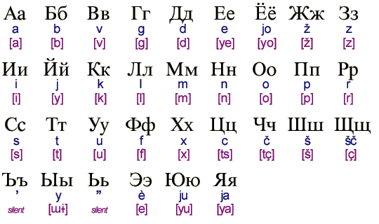
Slavic - Russian, Bulgarian, Macedonian, Russian, Rusyn, Serbian, Bosnian, Montenegrin, Ukrainian
Non-Slavic - Abkhaz, Bashkir, Chuvash, Erzya, Kazakh, Kildin Sami, Komi, Kyrgyz, Mari, Moksha, Mongolian, Ossetic, Sakha/Yakut, Tajik, Tatar, Tuvan, Udmurt, Yuit
Writing a language using a non-native writing system
достопримечательности москвы
(dostoprimechatelnosti moskviy)
‘Places of interest in Moscow’
Ходить (hodit) - To go by walking (there and back)
Идти (idti) - To go by walking (one way, progressive)
Ездить (yezdit) - To go by transport (there and back)
Ехать (yekhat) - To go by transport (one way, progressive)
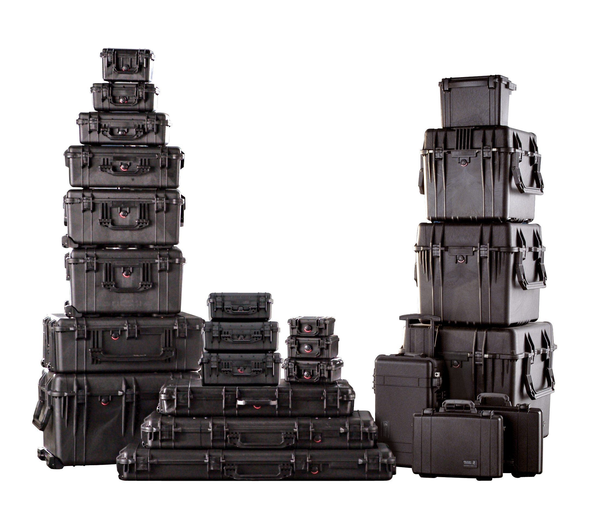
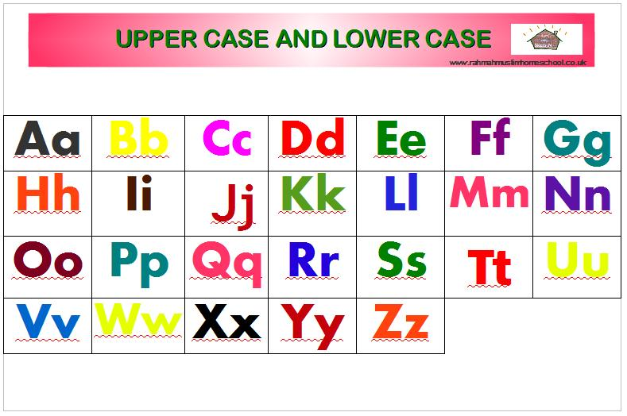
Let’s back up for a second.
| ### “Jony chased Dieter” |
 |
How a language marks who did what to whom
“Jony chased Dieter”
“Kevin waved to Niloo”
“Niloo waved to Kevin”
“Will ate his tofu wistfully”
The smallest unit of a word which has meaning in a language
Jony ate Dieter’s food pellets
I am singing in the rain
We call these morphemes “case markers”
Nominative Case - “The Subject”
Accusative Case - “The Object”
Tacking morphemes onto words to indicate their role in the sentence
Soboka videt kochku
dog-NOM see-3sg CAT-ACC
“The dog saw the cat”
Kochka videt sobaku
cat-NOM see-3sg dog-ACC
“The cat saw the dog”
Ya tebya vizhu
I-NOM you-ACC-INF see-1sg
“I see you”
Ti menya videsh
You-NOM I-ACC see-2sg
“You see me”
If we put the sentence “Niloo hugged the turtle” into Russian, the proper cases would be…
Niloo - NOM, Turtle - ACC
Niloo - ACC, Turtle - NOM
Niloo - NOM, Turtle - NOM
Niloo - ACC, Turtle - ACC
If we put the sentence “Niloo hugged the turtle” into Russian, the proper cases would be…
Niloo - ACC, Turtle - NOM
Niloo - NOM, Turtle - NOM
Niloo - ACC, Turtle - ACC
Nominative and Accusative cases are really common!
Der Hund beißt den Mann.
The-NOM dog bite-3sg the-ACC man.
‘The dog bites the man.’
Der Mann beißt den Hund.
The-NOM man bite-3sg the-ACC dog.
‘The man bites the dog.’
| Singular Nominative | Plural Nominative | Singular Accusative | Plural Accusative | |
|---|---|---|---|---|
| 1st | I | we | me | us |
| 2nd | you | y’all | you | y’all |
| 3rd | he/she | they | him/her | them |
| * I see him * I-NOM see he-ACC |
| * He sees me * He-NOM see-3sg I-NOM |
So, Nominative and Accusative cases are really useful!
Nominative Case - “The Subject”
Accusative Case - “The Direct Object”
Dative Case - “The Indirect Object or Recipient”
Genitive Case - “The Possessor”
Locative Case - “The Location”
Instrumental Case - “The Tool”
Marks the indirect object, or recipient of an item
Kevin dayot tsveti Lisye
Kevin-NOM give-3sg Flowers-ACC-PLUR Lisa-DAT
“Kevin gave Lisa flowers”
Enchiladi mne dala Niloo
Enchilada-ACC-PLUR 1sg-DAT give-PAST-FEM Niloo-NOM
“Niloo gave me Enchiladas”
Ya pomogayu Kevinu
1sg-NOM help-present.1sg Kevin-DAT
“I’m helping Kevin”
Mne zvonil Barack Obama
1sg-DAT call-past.masc Barack Obama
“Barack Obama called me”
If we put the sentence “Jony gave Dieter some pellets” into Russian, the proper cases would be…
Jony - ACC, Dieter - DAT, Pellets - NOM
Jony - NOM, Dieter - DAT, Pellets - ACC
Jony - NOM, Dieter - ACC, Pellets - DAT
Jony - DAT, Dieter - ACC, Pellets - NOM
If we put the sentence “Jony gave Dieter some pellets” into Russian, the proper cases would be…
Jony - NOM, Dieter - ACC, Pellets - DAT
Jony - DAT, Dieter - ACC, Pellets - NOM
Marks possession
Ya vizhu sharik Ponga
1sg-NOM see-1sg ball-ACC Pongo-GEN
“I see Pongo’s ball”
Michael Bay samaya bolshaya problema Amerikiy
Michael Bay single-NOM large-NOM problem-NOM America-GEN
“Michael Bay is America’s biggest problem”
If we put the sentence “Will stole the dragon’s iPad” into Russian, the proper cases would be…
Will - ACC, Dragon - NOM, iPad - GEN
Will - NOM, Dragon - GEN, iPad - ACC
Will - GEN, Dragon - ACC, iPad - NOM
Will - NOM, Dragon - ACC, iPad - GEN
Marks the location of events
Ya zhivu v Broomfielde
1sg-NOM live-1sg in Broomfield-LOC
“I live in Broomfield”
Pongo hochet byt na dvore
Pongo-NOM want-3sg be in outdoors-LOC
“Pongo wants to be outside”
Marks an object being used
Niloo pishet karandashom
Niloo-NOM write-3sg pencil-INST
“Niloo writes with a pencil”
Ya yem borscht so smetanoy
1sg-NOM eat borscht-ACC with sour.cream-INST
“I eat borscht with sour cream”
Nominative Case - “The Subject”
Accusative Case - “The Direct Object”
Dative Case - “The Indirect Object or Recipient”
Genitive Case - “The Possessor”
Locative Case - “The Location”
Instrumental Case - “The Tool”
(OK, relax, we’re done with the heavy stuff)
English can handle Nominative and Accusative.
This is a problem for translators.
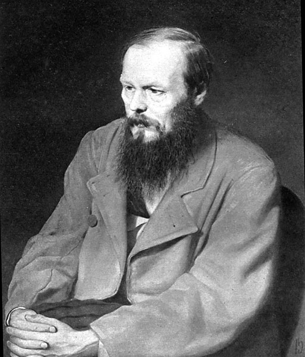
(“Crime and Punishment”)
(Upokoy gospod myotvikh, a zhivim eshyo zhit!)
Upokoy gospod myotvikh, a zhivim eshyo zhit
out-rest-IMP God-NOM dead-ACC, but living-DAT still to.live
“God give peace to the dead, the living have still to live!” - Constance Garnett
“May the Lord grant rest to the souls of the dead, and let life be the realm of the living!” - David McDuff
“May the Lord grant rest to the dead, but the living have still got to live!” - Pevear and Volokhonsky
“Que el Señor dé paz a los muertos y deje vivir a los vivos.” - No translation credit
Upokoy gospod myotvikh…
out-rest-IMP God-NOM dead-ACC
The “u-” means that the rest is “from here”.
The verb is a command, to God.
The dead are not “recieving” rest (dative), but they’re being rested (accusative).
“Souls” are not mentioned
…a zhivim eshyo zhit
but living-DAT still to.live
The act of living is what continues
The living are not doing the living.
Living isn’t obligation (“must still live”, “have to live”)
“Let Life be the realm of the living?”
“упокой господь мертвых, а живым еще жить!”
“God, take the dead away to rest, but those living still have the gift of a life to live”
… but that’s a terrible English sentence.
“God, take the dead away to rest, but those living still have the gift of a life to live” - Will
“God give peace to the dead, the living have still to live!” - Garnett
“May the Lord grant rest to the dead, but the living have still got to live!” - Pevear and Volokhonsky
You can’t capture Russian nuance in English, and vice versa
All translations “favor” either the original or new language
Person and number is really important in language
The Cyrillic writing system doesn’t suck.
Grammatical Relations mark who did what to whom
Case is important, and will come up over and over
Russian has an awesome case system
Translation is really hard.
Working with Case!
http://savethevowels.org/world/slides/lotw_5.html